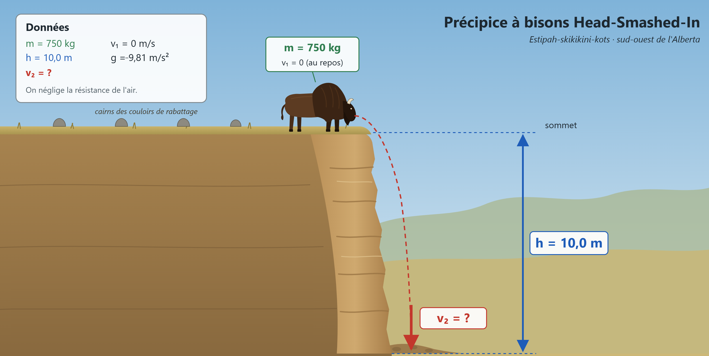
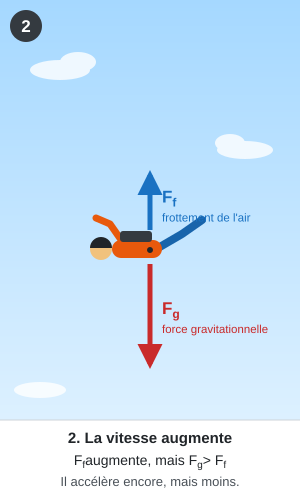
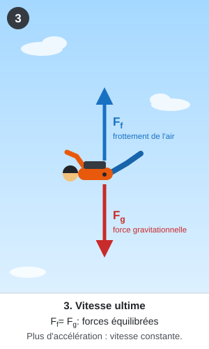
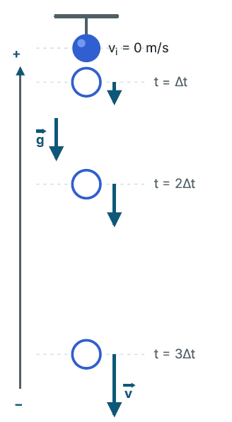

Physique
La chute libre
Table des matières
Activation des connaissances antérieures
Crédit
Créer par Anthropic Claude IA.
▶ Vidéo : Rappelle toi
Gravité
Force sans contact qui tire les objets vers le sol.
Mouvement accéléré
Mouvement dans lequel la vitesse de l'objet augmente au cours du temps.
Les variables et les unités sont la distance (m), la vitesse initiale (m/s), la vitesse finale (m/s), l'accélération (m/s²) et le temps (s).
Rappel
L'accélération indique de combien la vitesse change à chaque seconde. Une accélération de −9,81 m/s² signifie que la vitesse vers le bas augmente de 9,81 m/s à chaque seconde.
| Temps | Vitesse vers le bas |
|---|---|
| Après 1 s | -9,81 m/s |
| Après 2 s | -19,62 m/s |
| Après 3 s | -29,43 m/s |
Réflexion de départ
Prends 2 feuilles de papier identiques (de même masse) et fais une boule avec l'une d'elles. Laisse-les tomber en même temps, depuis la même hauteur.
- Que remarques-tu?
- Qu'est-ce qui explique la différence?
Garde ta réponse en tête : nous y reviendrons pendant la leçon.
Les objectifs de la section
À la fin de cette section, l'élève sera capable d' :
- Expliquer que le concept de l'analyse d'un objet en chute libre a évolué à mesure que de nouvelles preuves ont été découvertes et que la loi de la chute des corps a été testée (RAS – 20 – A 1.2 sts).
- Expliquer qualitativement un objet en chute libre à partir de données fournies (RAS – 20 – A 1.3 c).
- Expliquer quantitativement un objet en chute libre à partir de données fournies (RAS – 20 – A 1.3 c).
- Expliquer que l'étude de la loi de la chute libre permet d'accroître la connaissance du monde naturel (RAS – 20 – A 1.1 sts).
À quoi ça sert?
Crédit
Envato
▶ Vidéo : A quoi ça sert la chute libre.
1. Sécurité et équipements
- Parachutisme : le calcul de la taille des parachutes repose sur la loi de la chute libre combinée à la résistance de l'air. Cela permet de faire un atterrissage en sécurité.
- Capteurs : certaines montres intelligentes possèdent des capteurs qui détectent les chutes et peuvent déclencher une alarme ou envoyer un signal d'urgence.
2. Ingénierie et architecture
- Sécurité des bâtiments : les ingénieurs l'utilisent pour calculer l'impact d'un objet qui tomberait d'un échafaudage ou d'un toit afin de concevoir des casques de chantier et des filets de protection efficaces.
- Destruction contrôlée : pour faire s'effondrer un vieil immeuble en toute sécurité, les experts en démolition calculent le temps et la trajectoire de chute des gravats.
- Les ascenseurs et monte-charges : les systèmes de freinage d'urgence des ascenseurs sont calibrés grâce aux lois de la chute libre verticale. Si les câbles lâchent, les capteurs détectent l'accélération verticale immédiate (9,81 m/s²) et déclenchent des freins mécaniques automatiques.
3. Loisirs et sensations fortes
- Les tours de chute libre (Free Fall) : dans les parcs d'attractions, une nacelle est hissée au sommet d'une tour verticale puis lâchée dans le vide. Pendant les premières secondes, les passagers subissent une chute libre verticale pure et ressentent l'apesanteur avant que des freins magnétiques ne ralentissent la nacelle en bas.
- Le saut à l'élastique : le début du saut est une chute libre verticale directe. La physique de la chute libre permet de calculer précisément la longueur maximale que l'élastique atteindra avant de se tendre, garantissant que le sauteur ne touche pas le sol.
D'Aristote à Galilée
L'explication du concept de la chute libre ne s'est pas faite du jour au lendemain. Tout a commencé au 4e siècle avant Jésus-Christ.
Regarde la vidéo ci-dessous pour comprendre cette démarche scientifique.
Crédit
créée par Elevenlabs.
▶ Vidéo : D'Aristote à Galilée
La théorie de Galilée sur les objets en chute libre
Il est vrai que des objets différents ne subissent pas la même accélération lorsqu'ils tombent, mais si nous négligeons la résistance de l'air, ils atteindront le sol en même temps. Galilée réfuta donc l'idée d'Aristote : si l'on néglige la résistance de l'air, un objet dont la masse est 10 fois plus grande que celle d'un autre ne tombera pas 10 fois plus vite.
Preuve dans le vide
Cette loi de la chute libre est très difficile à démontrer, à moins qu'on ne soit capable de faire le vide. Connais-tu un endroit où il n'y a pas d'air, c'est-à-dire le vide? L'espace!
En 1971, lors de la mission Apollo 15, l'astronaute David Scott a lâché simultanément un marteau de géologue et une plume de faucon. Il a donc fallu aller sur la Lune pour valider la théorie de Galilée.
Regarde la vidéo suivante et choisis les sous-titres en français.
Crédit
Wikimedia Commons Voir la source (s’ouvre dans un nouvel onglet)
▶ Vidéo : Vidéo
L'étude de la chute libre représente l'un des plus grands bouleversements de l'histoire des sciences, marquant le passage d'une philosophie qualitative et intuitive à une physique quantitative et expérimentale.
Principe du mouvement accéléré
Grâce à Galilée, nous savons qu'un objet qui tombe vers la Terre accélère. En négligeant la résistance de l'air, l'objet est uniformément accéléré sous l'effet d'une seule force, la gravité.
Crédit
Illustration créée par Claude (IA), Anthropic.
À une hauteur de 10 m, en ne tenant pas compte de la résistance de l'air, une plume de 100 g et une bille d'acier de 2,0 kg en chute libre :
- subiront la même accélération;
- toucheront en même temps le sol;
- auront la même vitesse lorsqu'ils toucheront le sol.
La vitesse finale d'un objet en chute libre ne dépend pas de sa masse, mais uniquement de sa vitesse initiale et de la hauteur à partir de laquelle il a été lâché ou lancé. Plus un objet tombe de haut, plus sa vitesse à l'impact sera grande.
Vu que c'est un mouvement uniformément accéléré, on peut utiliser les 5 formules suivantes :
Les 5 formules du mouvement uniformément accéléré
| Équation | \(\Delta\vec{d}\) | \(\vec{a}\) | \(\vec{v}_\text{f}\) | \(\vec{v}_\text{i}\) | \(\Delta t\) |
|---|---|---|---|---|---|
| \(\vec{a} = \dfrac{\vec{v}_\text{f} - \vec{v}_\text{i}}{\Delta t}\) | non | oui | oui | oui | oui |
| \(\Delta\vec{d} = \dfrac{(\vec{v}_\text{i} + \vec{v}_\text{f})\,\Delta t}{2}\) | oui | non | oui | oui | oui |
| \(\Delta\vec{d} = \vec{v}_\text{i}\,\Delta t + \tfrac{1}{2}\vec{a}\,\Delta t^2\) | oui | oui | non | oui | oui |
| \(\Delta\vec{d} = \vec{v}_\text{f}\,\Delta t - \tfrac{1}{2}\vec{a}\,\Delta t^2\) | oui | oui | oui | non | oui |
| \(v_\text{f}^{\,2} = v_\text{i}^{\,2} + 2\vec{a}\,\Delta\vec{d}\) | oui | oui | oui | oui | non |
Pour choisir la bonne formule, nomme les variables connues, nomme l’inconnue, puis choisis la formule qui ne contient pas la variable absente.
À retenir
- En chute libre, la gravité est la seule force agissant sur l'objet (on néglige la résistance de l'air).
- Tous les objets en chute libre ont la même accélération, quelle que soit leur masse.
- La vitesse finale dépend de la vitesse initiale et de la hauteur de chute, mais pas de la masse.
- Plus un objet tombe de haut, plus sa vitesse à l'impact est grande.
- Comme la chute libre est un mouvement uniformément accéléré, on peut utiliser les 5 formules du mouvement uniformément accéléré.
Vérifie ta compréhension
On lâche en même temps, du haut d'un édifice de 10 m, une balle de tennis de 58 g et une boule de bowling de 7,0 kg. On néglige la résistance de l'air.
Laquelle touche le sol en premier?
Laquelle a la plus grande vitesse à l'impact?
Explique ta réponse.
En l'absence de résistance de l'air, la seule force qui agit sur chaque objet est la gravité. Les deux objets subissent donc la même accélération.
Ils partent du repos, tombent de la même hauteur et ont la même accélération. Ils touchent donc le sol en même temps.
La vitesse finale ne dépend que de la vitesse initiale et de la hauteur de chute, et non de la masse. Elle est donc la même pour les deux objets.
Réponse : Les deux objets touchent le sol en même temps et ont la même vitesse à l'impact, car la masse n'influence pas le mouvement en chute libre.
Piège à éviter
Ne pense pas qu'un objet plus lourd tombe plus vite. Dans la vie courante, une feuille de papier tombe plus lentement qu'une pierre en raison de la résistance de l'air, et non de sa masse. Si on néglige la résistance de l'air, tous les objets en chute libre subissent la même accélération.
Attention : la masse n'influence pas la vitesse finale, mais la hauteur de la chute et la vitesse initiale l'influencent.
Accélération gravitationnelle
L'accélération que subit un objet en chute libre sur Terre est appelée accélération due à la gravité, ou accélération gravitationnelle, et est symbolisée par la lettre \(\vec{g}\).
Si on néglige la résistance de l'air, quelle est la valeur de l'accélération gravitationnelle?
L'accélération gravitationnelle sur la Terre \(\vec{g}\) dépend d'un endroit à l'autre. Tu étudieras la raison lorsque tu verras le champ gravitationnel, mais en général, plus tu es loin du centre de la Terre, plus l'accélération gravitationnelle est faible. Le tableau suivant présente quelques valeurs de l'accélération gravitationnelle à différents endroits sur Terre.
| Endroit | Accélération gravitationnelle g (m/s²) |
|---|---|
| Edmonton | −9,812 |
| Pôle Nord | −9,832 |
| Toronto | −9,805 |
| Équateur | −9,780 |
| Mont Everest | −9,765 |
Crédit
Illustration créée par Claude (IA), Anthropic.
Pour nos calculs dans cette section, nous supposerons que \(\vec{g}\) est toujours constant et nous utiliserons la valeur de −9,81 m/s². Tu n'as pas besoin de mémoriser cette valeur; elle se trouve sur ta feuille de formules.
Laboratoire : accélération gravitationnelle
Crédit
Créer avec Anthropic Claude IA.
▶ Vidéo : Vidéo
But de l’expérience
Détermine l’accélération de cinq objets en chute libre à partir de la hauteur de chute et du temps de chute, puis compare les résultats à la valeur théorique de −9,81 m/s².
Hypothèse
Écris une hypothèse :
Est-ce que les cinq objets auront la même accélération?
Explique ton raisonnement en tenant compte de la forme de l'objet, de sa masse et de la résistance de l’air.
Matériel
- Ballon de soccer
- Balle de golf
- Rondelle de hockey
- Boule de papier
- Crayon
- Chronomètre
- Ruban à mesurer ou mètre
- Ruban adhésif (pour marquer la hauteur de chute)
- Calculatrice
Consignes de sécurité
- Garde la zone de chute dégagée.
- Ne lâche pas d’objet au-dessus de quelqu’un.
- La rondelle et la balle de golf sont dures : éloigne tes pieds de la zone d’impact.
- Si tu montes sur un escabeau, assure-toi qu’il est stable et qu’un partenaire le tient.
- Ramasse tout de suite les objets tombés pour éviter les glissades.
Démarche
- Choisis une hauteur de chute (par exemple 2,0 m) et marque-la au mur avec du ruban adhésif.
- Mesure précisément la hauteur avec le ruban à mesurer et note-la dans le tableau.
- Place-toi à côté du mur et tiens le premier objet à la hauteur marquée, sans vitesse initiale (le bas de l’objet au niveau du ruban adhésif).
- Fais un décompte à voix haute avec ton partenaire, puis lâche l’objet sans le pousser.
- Ton partenaire démarre le chronomètre au moment du lâcher et l’arrête quand l’objet touche le sol.
- Note le temps de chute dans le tableau.
- Fais trois essais pour chaque objet, puis calcule le temps moyen.
- Répète pour chacun des cinq objets.
- Calcule l’accélération de chaque objet en utilisant le temps moyen.
Observations et données
| Objet | Hauteur (m) | Temps essai 1 (s) | Temps essai 2 (s) | Temps essai 3 (s) | Temps moyen (s) | Accélération (m/s²) |
|---|---|---|---|---|---|---|
| Ballon de soccer | à remplir | à remplir | à remplir | à remplir | à remplir | à remplir |
| Balle de golf | à remplir | à remplir | à remplir | à remplir | à remplir | à remplir |
| Rondelle | à remplir | à remplir | à remplir | à remplir | à remplir | à remplir |
| Boule de papier | à remplir | à remplir | à remplir | à remplir | à remplir | à remplir |
| Crayon | à remplir | à remplir | à remplir | à remplir | à remplir | à remplir |
Analyse
- Quelle est l’accélération de chaque objet?
- Les cinq accélérations sont-elles égales?
Compare-les à −9,81 m/s². - Quels objets s’éloignent le plus de −9,81 m/s²?
Explique pourquoi selon toi. - Quelles sources d’erreur ont influencé tes mesures?
Indique si chacune des sources d'erreur rend l’accélération calculée trop grande ou trop petite. - Pourquoi faire trois essais et calculer une moyenne améliore-t-il la fiabilité des résultats?
Conclusion
Réponds au but du laboratoire en indiquant les accélérations obtenues.
Dis si ton hypothèse est confirmée et utilise tes résultats pour justifier ta réponse.
Explique ce qui se passerait dans le vide et fais le lien avec les travaux de Galilée et l’expérience d’Apollo 15.
PNMI et chute libre
Dans le Sud-Ouest de l'Alberta, tout près des contreforts des Rocheuses, on trouve le précipice à bisons de Head-Smashed-In. Pendant près de 6 000 ans, les peuples autochtones de la région utilisaient ce site pour tuer un grand nombre de bisons. Les chasseurs dirigeaient les bisons vers les hauteurs des collines Porcupine afin qu'ils tombent du haut d'une falaise d'environ 10 mètres. Il suffisait par la suite de dépecer les carcasses, ce qui fournissait une énorme quantité de nourriture, de fourrures et de matériaux pour les vêtements, les outils et les habitations.
Ce site fut probablement l'un des plus importants en Amérique, car les fouilles archéologiques ont permis de découvrir une couche d'environ 11 mètres d'épaisseur, composée de strates d'os découpés et d'outils en pierre utilisés par les peuples des Premières Nations. Ce site fournissait également de précieuses informations sur les coutumes de chasse et le mode de vie de ces peuples.
Le précipice à bisons Head-Smashed-In a été désigné lieu historique national du Canada en 1968, ressource historique provinciale de l'Alberta en 1979 et site du patrimoine mondial de l'UNESCO en 1981.
Si tu désires en apprendre davantage, visite les sites suivants :
- Parcs Canada : précipice à bisons Head-Smashed-In (s’ouvre dans un nouvel onglet)
- UNESCO : liste du patrimoine mondial (s’ouvre dans un nouvel onglet)
Problème

Crédit
Illustration créée par Claude (IA), Anthropic.
Si on suppose un bison ayant une masse de 750 kg qui se trouve au sommet du précipice à Bison's Head-Smashed-In d'une hauteur de 10,0 m, quelle serait sa vitesse lorsqu'il frappera le bas de l'escarpement?
Données : \(\vec{v}_\text{i} = 0\ \text{m/s}\); \(\vec{d} = -10{,}0\ \text{m}\); \(\vec{a} = \vec{g} = -9{,}81\ \text{m/s}^2\)
Inconnue : \(\vec{v}_\text{f}\)
La masse (750 kg) n’est pas nécessaire : en chute libre, la vitesse ne dépend pas de la masse.
On n’a pas le temps, on utilise donc \(v_\text{f}^{\,2} = v_\text{i}^{\,2} + 2ad\).
\[v_\text{f}^{\,2} = 0^2 + 2(-9{,}81)(-10{,}0) = 196{,}2\ \text{m}^2/\text{s}^2\]
\[v_\text{f} = \sqrt{196{,}2} = 14{,}0\ \text{m/s}\]
Le bison se déplace vers le bas, la vitesse est donc négative.
Réponse : \(\vec{v}_\text{f} = -14{,}0\ \text{m/s}\), soit 14,0 m/s vers le bas.
Pratique guidée
Problème 1
La tour de Calgary est un des symboles de la métropole. Si une personne se trouve au sommet de la tour et laisse tomber un objet de 5,00 kg, et que celui-ci met 6,24 s à tomber, quelle est la hauteur de la tour de Calgary?
|
Données : \(\vec{v}_\text{i} = 0\ \text{m/s}\); \(t = 6{,}24\ \text{s}\); \(\vec{a} = \vec{g} = -9{,}81\ \text{m/s}^2\) Inconnue : \(\vec{d}\) (hauteur de la tour) La masse (5,00 kg) n’est pas nécessaire. On utilise \(\vec{d} = \vec{v}_\text{i}t + \tfrac{1}{2}\vec{a}t^2\). \[\vec{d} = (0)(6{,}24) + \tfrac{1}{2}(-9{,}81)(6{,}24)^2\] \[\vec{d} = -191\ \text{m}\] Le signe négatif indique que l’objet descend de 191 m. Réponse : La tour de Calgary mesure environ 191 m. | CréditMichel Gariepy ▶ Vidéo : Résolution du problème |
Problème 2
La passerelle Columbia Icefield Skywalk est située dans le parc national de Jasper et est en forme d'un demi-cercle suspendu à 280 m au-dessus de la vallée de Sunwapta. Supposons qu'un touriste prenant une photo avec son téléphone intelligent échappe son appareil, quelle sera la vitesse du téléphone lorsqu'il frappera le sol?
|
Données : \(\vec{v}_\text{i} = 0\ \text{m/s}\); \(\vec{d} = -280\ \text{m}\); \(\vec{a} = \vec{g} = -9{,}81\ \text{m/s}^2\) Inconnue : \(\vec{v}_\text{f}\) On n’a pas le temps, on utilise \(v_\text{f}^{\,2} = v_\text{i}^{\,2} + 2ad\). \[v_\text{f}^{\,2} = 0^2 + 2(-9{,}81)(-280) = 5\,494\ \text{m}^2/\text{s}^2\] \[v_\text{f} = \sqrt{5\,494} = 74{,}1\ \text{m/s}\] Le téléphone descend : la vitesse est négative. Réponse : \(\vec{v}_\text{f} = -74{,}1\ \text{m/s}\), soit 74,1 m/s vers le bas (en négligeant la résistance de l’air). | CréditMichel Gariepy ▶ Vidéo : Vidéo de la solution. |
La vitesse ultime
Si on néglige la résistance de l'air, tu as vu que la seule force agissant sur un objet en chute libre est la force gravitationnelle exercée par la Terre. Dans ce cas précis, tous les objets, quelle que soit leur masse, subiront la même accélération.
En réalité, tous les objets tombant dans l'atmosphère sont soumis à la résistance de l'air. Cette résistance de l'air dépendra de la masse, de la forme et de la vitesse initiale de l'objet. Cela implique donc que chaque objet aura sa propre accélération.
Dans ce type de situation, nous devons considérer deux forces lors de la chute de l'objet :
- la force gravitationnelle;
- la force de frottement avec l'air.
Prenons l'exemple du parachutisme pour bien le comprendre. Lorsque le parachutiste quitte l'avion, les deux forces agissent sur lui comme le montre le schéma ci-dessous.
| Étape 1 | Étape 2 | Étape 3 | Étape 4 |
|---|---|---|---|
 est plus grande que le frottement de l'air (Ff) : Fg > Ff, donc le parachutiste accélère.") CréditIllustration créée par Claude (IA), Anthropic. |  CréditIllustration créée par Claude (IA), Anthropic. | .") CréditIllustration créée par Claude (IA), Anthropic. |  CréditIllustration créée par Claude (IA), Anthropic. |

Crédit
Illustration créée par Claude (IA), Anthropic.
Au début de la chute, la force gravitationnelle est supérieure à la force de frottement avec l'air, mais à mesure que sa vitesse augmente, la force de frottement augmente également.
Rappelle-toi : lorsque tu es en voiture et que tu sors la main de la fenêtre. Plus la vitesse de la voiture est élevée, plus la résistance de l'air augmente.
C'est le même principe pour le parachutisme. Cette force de résistance de l'air augmente jusqu'à atteindre la même valeur que la force gravitationnelle.
À ce point où les deux forces sont équilibrées, le parachutiste ne subit plus d'accélération et se déplace donc à une vitesse constante, appelée vitesse ultime.
Chaque objet a sa propre vitesse ultime.
- Plus sa masse est grande, plus sa vitesse ultime est grande.
- Plus sa surface de contact avec l'air augmente, plus sa vitesse ultime diminue.
Par exemple, une roche a une vitesse ultime plus grande qu'une plume.
Résumé
Puisque les corps en chute libre suivent le principe physique d'un mouvement accéléré, nous pouvons utiliser les formules qui s'appliquent à un tel mouvement.
Crédit
vidéo généré par Claude (IA), Anthropic.
▶ Vidéo : Résumé - Chute libre
N'oublie pas, par convention, une direction vers le bas est négative et une direction vers le haut est positive.
Lorsque tu laisses tomber un objet depuis une certaine hauteur :
Voici les caractéristiques d'un tel mouvement :

Crédit
Illustration créée par Claude (IA), Anthropic.
- L'accélération gravitationnelle est toujours constante et égale à \(\vec{g}\) = −9,81 m/s².
- La vitesse augmente négativement (vers le bas).
- La distance parcourue est négative (vers le bas).
- Nous pouvons utiliser les formules d'un mouvement accéléré.
- La seule force agissant sur la balle est la force gravitationnelle.
Pratique autonome
Niveau facile
Problème 1
Lors d'une randonnée dans les badlands près de Drumheller, Naya laisse tomber un caillou du haut d'une falaise. Le caillou atteint le sol 2,5 s plus tard. Quelle est la vitesse du caillou juste avant de toucher le sol?
Données : \(\vec{v}_\text{i} = 0\ \text{m/s}\); \(t = 2{,}5\ \text{s}\); \(\vec{a} = \vec{g} = -9{,}81\ \text{m/s}^2\)
Inconnue : \(\vec{v}_\text{f}\)
On isole \(\vec{v}_\text{f}\) dans \(\vec{a} = \dfrac{\vec{v}_\text{f} - \vec{v}_\text{i}}{\Delta t}\) : \(\vec{v}_\text{f} = \vec{v}_\text{i} + \vec{a}\,\Delta t\).
\[\vec{v}_\text{f} = 0 + (-9{,}81)(2{,}5)\]
\[\vec{v}_\text{f} = -25\ \text{m/s}\]
Réponse : \(\vec{v}_\text{f} = -25\ \text{m/s}\), soit environ 25 m/s vers le bas.
Problème 2
Debout sur un pont de 5,2 m de hauteur, tu laisses tomber un objet. Quelle est la vitesse de l'objet juste avant l'impact avec la surface de l'eau?
Données : \(\vec{v}_\text{i} = 0\ \text{m/s}\); \(\vec{d} = -5{,}2\ \text{m}\); \(\vec{a} = \vec{g} = -9{,}81\ \text{m/s}^2\)
Inconnue : \(\vec{v}_\text{f}\)
On n’a pas le temps, on utilise \(v_\text{f}^{\,2} = v_\text{i}^{\,2} + 2ad\).
\[v_\text{f}^{\,2} = 0^2 + 2(-9{,}81)(-5{,}2) = 102\ \text{m}^2/\text{s}^2\]
\[v_\text{f} = \sqrt{102} = 10\ \text{m/s}\]
L’objet descend : la vitesse est négative.
Réponse : \(\vec{v}_\text{f} = -10\ \text{m/s}\)
Problème 3
Dans le canyon Grotto, près de Canmore, une grimpeuse échappe un mousqueton du haut d'une paroi. Il part du repos et touche le sol à une vitesse de 21 m/s.
- De quelle hauteur le mousqueton est-il tombé?
- Combien de temps a duré la chute?
Données : \(\vec{v}_\text{i} = 0\ \text{m/s}\); \(\vec{v}_\text{f} = -21\ \text{m/s}\); \(\vec{a} = \vec{g} = -9{,}81\ \text{m/s}^2\)
Inconnue : A) \(\vec{d}\) ; B) \(t\)
A) On utilise \(v_\text{f}^{\,2} = v_\text{i}^{\,2} + 2ad\), donc \(d = \dfrac{v_\text{f}^{\,2} - v_\text{i}^{\,2}}{2a}\).
\[\vec{d} = \frac{(-21)^2 - 0^2}{2(-9{,}81)} = \frac{441}{-19{,}62} = -22\ \text{m}\]
B) On utilise \(\Delta t = \dfrac{\vec{v}_\text{f} - \vec{v}_\text{i}}{\vec{a}}\).
\[\Delta t = \frac{-21 - 0}{-9{,}81} = 2{,}1\ \text{s}\]
Réponse : A) Le mousqueton est tombé d’environ 22 m. B) La chute a duré 2,1 s.
Niveau moyen
Problème 4
Le parc d'élévateurs à grains de Saint-Albert contient deux silos à grains magnifiquement restaurés et classés comme biens historiques provinciaux (Brackman-Ker, construit en 1906, et Alberta Wheat Pool, construit en 1929). Si un grain de blé tombe du haut de l'élévateur à grains Alberta Wheat Pool et met environ 2,3 s à toucher le sol, quelle est la hauteur, en mètres, de la structure?
Données : \(\vec{v}_\text{i} = 0\ \text{m/s}\); \(t = 2{,}3\ \text{s}\); \(\vec{a} = \vec{g} = -9{,}81\ \text{m/s}^2\)
Inconnue : \(\vec{d}\)
On utilise \(\vec{d} = \vec{v}_\text{i}t + \tfrac{1}{2}\vec{a}t^2\).
\[\vec{d} = 0 + \tfrac{1}{2}(-9{,}81)(2{,}3)^2\]
\[\vec{d} = -26\ \text{m}\]
Réponse : L’élévateur à grains mesure environ 26 m.
Problème 5
Tu es debout sur la plateforme d'une structure de jeu. Tu laisses tomber un ballon rempli d'eau sur l'un de tes amis qui passe sous toi. Combien de temps prend le ballon pour tomber si tu te trouves à une hauteur de 1,8 m de ton ami?
Données : \(\vec{v}_\text{i} = 0\ \text{m/s}\); \(\vec{d} = -1{,}8\ \text{m}\); \(\vec{a} = \vec{g} = -9{,}81\ \text{m/s}^2\)
Inconnue : \(t\)
Comme \(\vec{v}_\text{i} = 0\), la formule \(\vec{d} = \vec{v}_\text{i}t + \tfrac{1}{2}\vec{a}t^2\) devient \(\vec{d} = \tfrac{1}{2}\vec{a}t^2\), donc \(t = \sqrt{\dfrac{2\vec{d}}{\vec{a}}}\).
\[t = \sqrt{\frac{2(-1{,}8)}{-9{,}81}} = \sqrt{0{,}367}\]
\[t = 0{,}61\ \text{s}\]
Réponse : Le ballon met 0,61 s à tomber.
Problème 6
Une balle est lâchée depuis le pont d'observation de la tour de Calgary à environ 160 m du sol. Quelle est la vitesse de la balle lorsqu'elle touche le sol, en km/h?
Données : \(\vec{v}_\text{i} = 0\ \text{m/s}\); \(\vec{d} = -160\ \text{m}\); \(\vec{a} = \vec{g} = -9{,}81\ \text{m/s}^2\)
Inconnue : \(\vec{v}_\text{f}\) en km/h
On utilise \(v_\text{f}^{\,2} = v_\text{i}^{\,2} + 2ad\).
\[v_\text{f}^{\,2} = 0^2 + 2(-9{,}81)(-160) = 3\,139\ \text{m}^2/\text{s}^2\]
\[v_\text{f} = \sqrt{3\,139} = 56{,}0\ \text{m/s}\]
Conversion : on multiplie par 3,6 (1 m/s = 3,6 km/h).
\[56{,}0\ \text{m/s} \times 3{,}6 = 202\ \text{km/h}\]
Réponse : \(\vec{v}_\text{f} = -202\ \text{km/h}\), soit environ 202 km/h vers le bas.
Niveau difficile
Problème 7
Une autre expérience qu'un astronaute a réalisée sur la Lune est de laisser tomber un objet d'une hauteur de 1,8 m et de mesurer le temps que celui-ci a pris pour atteindre le sol lunaire. Si l'astronaute a obtenu comme résultat 1,5 s, quelle est l'accélération gravitationnelle sur la Lune?
Données : \(\vec{v}_\text{i} = 0\ \text{m/s}\); \(\vec{d} = -1{,}8\ \text{m}\); \(t = 1{,}5\ \text{s}\)
Inconnue : \(\vec{a}\) (accélération gravitationnelle sur la Lune)
Comme \(\vec{v}_\text{i} = 0\), on a \(\vec{d} = \tfrac{1}{2}\vec{a}t^2\), donc \(\vec{a} = \dfrac{2\vec{d}}{t^2}\).
\[\vec{a} = \frac{2(-1{,}8)}{(1{,}5)^2} = \frac{-3{,}6}{2{,}25}\]
\[\vec{a} = -1{,}6\ \text{m/s}^2\]
Réponse : \(\vec{g}_\text{Lune} = -1{,}6\ \text{m/s}^2\), environ 6 fois plus petite que sur la Terre.
Problème 8
Deux élèves marchent sur le pont High Level Bridge d'Edmonton avec un caillou à la main afin de mesurer approximativement la hauteur de la structure. Lorsqu'ils arrivent environ au milieu du pont, l'un d'eux lance le caillou vers le bas à une vitesse de 15 m/s et l'autre élève mesure, à l'aide d'un chronomètre, le temps nécessaire au caillou pour atteindre l'eau de la rivière Saskatchewan. Quelle est la hauteur du pont High Level Bridge d'Edmonton?
Note pour l’enseignant : l’énoncé ne donne pas le temps mesuré. Le calcul utilise 2,0 s comme exemple.
Données : \(\vec{v}_\text{i} = -15\ \text{m/s}\) (lancé vers le bas); \(\vec{a} = \vec{g} = -9{,}81\ \text{m/s}^2\); \(t\) = temps mesuré au chronomètre
Inconnue : \(\vec{d}\) (hauteur du pont)
On utilise \(\vec{d} = \vec{v}_\text{i}t + \tfrac{1}{2}\vec{a}t^2\).
Exemple avec \(t = 2{,}0\ \text{s}\) :
\[\vec{d} = (-15)(2{,}0) + \tfrac{1}{2}(-9{,}81)(2{,}0)^2 = -30 - 19{,}6\]
\[\vec{d} = -50\ \text{m}\]
Réponse : Avec un temps de 2,0 s, le pont mesure environ 50 m de haut.
Problème 9
Un élève veut estimer la hauteur d'un pont ferroviaire qui enjambe une coulée dans le sud de l'Alberta. Il lâche une pierre (sans vitesse initiale) depuis le pont. Une amie, en bas, filme la chute et constate que la pierre parcourt 40 m pendant la dernière seconde de sa chute.
- Quelle est la durée totale de la chute?
- Quelle est la hauteur du pont?
Données : \(\vec{v}_\text{i} = 0\ \text{m/s}\); \(\vec{d} = -40\ \text{m}\) pendant la dernière seconde; \(\vec{a} = \vec{g} = -9{,}81\ \text{m/s}^2\)
Inconnue : a) \(t\) (durée totale) ; b) \(\vec{d}\) (hauteur du pont)
a) Position après un temps \(t\) : \(\vec{d}(t) = \tfrac{1}{2}\vec{a}t^2\). Une seconde avant la fin : \(\vec{d}(t-1) = \tfrac{1}{2}\vec{a}(t-1)^2\).
La distance parcourue pendant la dernière seconde est la différence :
\[\tfrac{1}{2}\vec{a}\left[t^2 - (t-1)^2\right] = \tfrac{1}{2}\vec{a}(2t - 1) = -40\]
\[2t - 1 = \frac{2(-40)}{-9{,}81} = 8{,}15 \quad\Rightarrow\quad t = 4{,}58\ \text{s}\]
b) On utilise \(\vec{d} = \tfrac{1}{2}\vec{a}t^2\) avec la durée totale.
\[\vec{d} = \tfrac{1}{2}(-9{,}81)(4{,}58)^2 = -103\ \text{m}\]
Réponse : a) La chute dure environ 4,58 s. b) Le pont mesure environ 103 m de haut.
Problème 10
Un ouvrier travaille au sommet d'un vieux silo-élévateur à grain à Saint-Albert, à 30 m du sol. Il échappe un boulon, qui part du repos. 0,50 s plus tard, un collègue qui se trouve à une fenêtre plus bas sur le même mur échappe lui aussi un boulon (sans vitesse initiale). Les deux boulons touchent le sol en même temps.
À quelle hauteur se trouve la fenêtre du collègue?
Données : Hauteur de l’ouvrier : 30 m; \(\vec{v}_\text{i} = 0\ \text{m/s}\) pour les deux boulons; écart de 0,50 s; \(\vec{a} = \vec{g} = -9{,}81\ \text{m/s}^2\)
Inconnue : hauteur de la fenêtre du collègue
Boulon de l’ouvrier : \(t_1 = \sqrt{\dfrac{2\vec{d}}{\vec{a}}} = \sqrt{\dfrac{2(-30)}{-9{,}81}} = 2{,}47\ \text{s}\)
Le deuxième boulon part 0,50 s plus tard et arrive en même temps, donc il tombe pendant :
\[t_2 = 2{,}47 - 0{,}50 = 1{,}97\ \text{s}\]
Boulon du collègue : \(\vec{d}_2 = \tfrac{1}{2}\vec{a}t_2^{\,2}\)
\[\vec{d}_2 = \tfrac{1}{2}(-9{,}81)(1{,}97)^2 = -19\ \text{m}\]
Réponse : La fenêtre du collègue se trouve à environ 19 m du sol.
Retour sur les objectifs
Coche chaque objectif que tu te sens capable d’atteindre. Si tu hésites, fais les questions de révision associées, puis reviens cocher.
-
Pour t’exercer (page Révision) : question 3 et question 8
-
Pour t’exercer (page Révision) : question 3, question 4 et question 8
-
Pour t’exercer (page Révision) : question 1, question 2, question 5, question 6, question 7, question 9 et question 10
-
Pour t’exercer (page Révision) : question 4 et question 8
Faire les 10 questions de révision
Tes objectifs cochés sont gardées dans ce navigateur seulement.
Révision
Ces 10 questions couvrent toute la section. Essaie chaque question avant d’ouvrir la solution. Utilise \(\vec{g} = -9{,}81\ \text{m/s}^2\) sur la Terre, sauf indication contraire.
Question 1
À Red Deer, un glaçon se détache du toit d’une maison. Il touche le sol 1,22 s plus tard, à une vitesse de 12,0 m/s vers le bas. De quelle hauteur est-il tombé?
Données : \(\vec{v}_\text{i} = 0\ \text{m/s}\); \(\vec{v}_\text{f} = -12{,}0\ \text{m/s}\); \(t = 1{,}22\ \text{s}\)
Inconnue : \(\vec{d}\)
On connaît les deux vitesses et le temps : on utilise la formule de la vitesse moyenne \(\vec{d} = \left(\dfrac{\vec{v}_\text{f} + \vec{v}_\text{i}}{2}\right)t\).
\[\vec{d} = \left(\frac{-12{,}0 + 0}{2}\right)(1{,}22)\]
\[\vec{d} = -7{,}32\ \text{m}\]
Réponse : Le glaçon est tombé d’une hauteur de 7,32 m.
Question 2
Du haut d’une falaise de la vallée de la rivière Saskatchewan Sud, près de Medicine Hat, un élève lance un caillou verticalement vers le bas à 3,0 m/s. Quelle est la vitesse du caillou 1,5 s plus tard, avant qu’il touche le sol?
Données : \(\vec{v}_\text{i} = -3{,}0\ \text{m/s}\) (vers le bas); \(t = 1{,}5\ \text{s}\); \(\vec{a} = \vec{g} = -9{,}81\ \text{m/s}^2\)
Inconnue : \(\vec{v}_\text{f}\)
Attention : la vitesse initiale est vers le bas, donc négative.
On isole \(\vec{v}_\text{f}\) dans \(\vec{a} = \dfrac{\vec{v}_\text{f} - \vec{v}_\text{i}}{\Delta t}\) : \(\vec{v}_\text{f} = \vec{v}_\text{i} + \vec{a}\,\Delta t\).
\[\vec{v}_\text{f} = -3{,}0 + (-9{,}81)(1{,}5) = -3{,}0 - 14{,}7\]
\[\vec{v}_\text{f} = -17{,}7\ \text{m/s}\]
Réponse : \(\vec{v}_\text{f} = -17{,}7\ \text{m/s}\), soit 17,7 m/s vers le bas.
Question 3
Au Rogers Place, à Edmonton, une rondelle de hockey de 170 g lâchée du haut des gradins met 1,75 s pour toucher la glace. On lâche ensuite, de la même hauteur, une boule de quilles de 7,0 kg, environ 40 fois plus lourde. On néglige la résistance de l’air.
- Selon Aristote, combien de temps mettrait la boule de quilles?
- Selon Galilée, combien de temps mettrait-elle?
- Quelle expérience a confirmé l’idée de Galilée?
a) Selon Aristote, un objet 40 fois plus lourd tombe 40 fois plus vite : \(t = \dfrac{1{,}75\ \text{s}}{40} = 0{,}044\ \text{s}\).
b) Selon Galilée, sans résistance de l’air, tous les objets subissent la même accélération \(\vec{g}\), peu importe leur masse. La boule met donc aussi 1,75 s.
c) En 1971, lors de la mission Apollo 15, l’astronaute David Scott a lâché un marteau et une plume sur la Lune, où il n’y a presque pas d’air. Les deux objets ont touché le sol en même temps.
Réponse : a) 0,044 s selon Aristote. b) 1,75 s selon Galilée. c) L’expérience du marteau et de la plume sur la Lune.
Question 4
Une parachutiste saute d’un avion au-dessus d’Innisfail. Après quelques secondes de chute, elle atteint sa vitesse ultime.
- Explique pourquoi sa vitesse cesse d’augmenter.
- Que se passe-t-il pour sa vitesse ultime lorsqu’elle ouvre son parachute? Explique.
a) Deux forces agissent sur elle : la force gravitationnelle (vers le bas) et la résistance de l’air (vers le haut).
Au début, la force gravitationnelle est plus grande : elle accélère. Plus elle va vite, plus la résistance de l’air augmente.
Quand les deux forces sont égales, elles s’équilibrent : son accélération devient nulle et sa vitesse reste constante. C’est la vitesse ultime.
b) En ouvrant son parachute, elle augmente beaucoup sa surface de contact avec l’air. La résistance de l’air augmente, donc sa vitesse ultime diminue : elle ralentit jusqu’à une nouvelle vitesse ultime, plus petite et sécuritaire pour l’atterrissage.
Réponse : a) Les forces sont équilibrées, l’accélération est nulle. b) La vitesse ultime diminue, car la surface de contact avec l’air augmente.
Question 5
À Fort McMurray, un ouvrier se tient sur une plateforme à 18,0 m du sol. Il lance un sac d’outils verticalement vers le bas à 2,0 m/s à un collègue resté au sol. Combien de temps le sac met-il pour toucher le sol?
Données : \(\vec{v}_\text{i} = -2{,}0\ \text{m/s}\) (vers le bas); \(\vec{d} = -18{,}0\ \text{m}\); \(\vec{a} = \vec{g} = -9{,}81\ \text{m/s}^2\)
Inconnue : \(t\)
On ne peut pas isoler \(t\) facilement dans \(\vec{d} = \vec{v}_\text{i}t + \tfrac{1}{2}\vec{a}t^2\), car \(\vec{v}_\text{i}\) n’est pas nul. On procède en deux étapes.
Étape 1 : on trouve la vitesse finale avec \(v_\text{f}^{\,2} = v_\text{i}^{\,2} + 2ad\).
\[v_\text{f}^{\,2} = (-2{,}0)^2 + 2(-9{,}81)(-18{,}0) = 4{,}0 + 353 = 357\ \text{m}^2/\text{s}^2\]
\[v_\text{f} = \sqrt{357} = 18{,}9\ \text{m/s} \quad\Rightarrow\quad \vec{v}_\text{f} = -18{,}9\ \text{m/s}\]
Étape 2 : on trouve le temps avec \(\Delta t = \dfrac{\vec{v}_\text{f} - \vec{v}_\text{i}}{\vec{a}}\).
\[\Delta t = \frac{-18{,}9 - (-2{,}0)}{-9{,}81} = \frac{-16{,}9}{-9{,}81} = 1{,}72\ \text{s}\]
Réponse : Le sac touche le sol après 1,72 s.
Question 6
Au canyon Maligne, près de Jasper, une guide se tient sur une passerelle à 35,0 m au-dessus de l’eau. Elle lance un caillou verticalement vers le bas à 4,0 m/s. Quelle est la vitesse du caillou juste avant de toucher l’eau?
Données : \(\vec{v}_\text{i} = -4{,}0\ \text{m/s}\) (vers le bas); \(\vec{d} = -35{,}0\ \text{m}\); \(\vec{a} = \vec{g} = -9{,}81\ \text{m/s}^2\)
Inconnue : \(\vec{v}_\text{f}\)
Attention : la vitesse initiale n’est pas nulle et elle est négative (vers le bas).
On utilise \(v_\text{f}^{\,2} = v_\text{i}^{\,2} + 2ad\).
\[v_\text{f}^{\,2} = (-4{,}0)^2 + 2(-9{,}81)(-35{,}0) = 16 + 687 = 703\ \text{m}^2/\text{s}^2\]
\[v_\text{f} = \sqrt{703} = 26{,}5\ \text{m/s}\]
Réponse : \(\vec{v}_\text{f} = -26{,}5\ \text{m/s}\), soit 26,5 m/s vers le bas.
Question 7
Pendant le tournage d’un film près de Canmore, un sac de sable est lancé verticalement vers le bas du haut d’une falaise. Il touche le sol 1,50 s plus tard, à une vitesse de 25,0 m/s.
- Quelle est la hauteur de la falaise?
- À quelle vitesse le sac a-t-il été lancé?
Données : \(\vec{v}_\text{f} = -25{,}0\ \text{m/s}\); \(t = 1{,}50\ \text{s}\); \(\vec{a} = \vec{g} = -9{,}81\ \text{m/s}^2\)
Inconnue : a) \(\vec{d}\) ; b) \(\vec{v}_\text{i}\)
a) On ne connaît pas la vitesse initiale : on utilise \(\vec{d} = \vec{v}_\text{f}t - \tfrac{1}{2}\vec{a}t^2\).
\[\vec{d} = (-25{,}0)(1{,}50) - \tfrac{1}{2}(-9{,}81)(1{,}50)^2 = -37{,}5 + 11{,}0\]
\[\vec{d} = -26{,}5\ \text{m}\]
b) On utilise \(\vec{v}_\text{i} = \vec{v}_\text{f} - \vec{a}\,\Delta t\).
\[\vec{v}_\text{i} = -25{,}0 - (-9{,}81)(1{,}50) = -10{,}3\ \text{m/s}\]
Réponse : a) La falaise mesure 26,5 m. b) Le sac a été lancé à 10,3 m/s vers le bas.
Question 8
Dans son école à Grande Prairie, une élève filme une balle lâchée sans vitesse initiale. Elle note la position de la balle toutes les 0,10 s.
| Temps (s) | Position (m) |
|---|---|
| 0 | 0 |
| 0,10 | −0,049 |
| 0,20 | −0,196 |
| 0,30 | −0,441 |
| 0,40 | −0,785 |
Comme Galilée avec son plan incliné, analyse ces résultats.
- Montre que la distance parcourue augmente comme le carré du temps.
- Calcule l’accélération gravitationnelle.
Données : positions à 0,10 s, 0,20 s, 0,30 s et 0,40 s; \(\vec{v}_\text{i} = 0\ \text{m/s}\)
Inconnue : a) relation entre \(d\) et \(t\) ; b) \(\vec{g}\)
a) Quand le temps double (0,10 s → 0,20 s), la distance est multipliée par \(\dfrac{0{,}196}{0{,}049} = 4\).
Quand le temps triple (0,10 s → 0,30 s), la distance est multipliée par \(\dfrac{0{,}441}{0{,}049} = 9\).
La distance augmente comme le carré du temps, exactement comme Galilée l’avait remarqué.
b) Comme \(\vec{v}_\text{i} = 0\), on a \(\vec{d} = \tfrac{1}{2}\vec{a}t^2\), donc \(\vec{a} = \dfrac{2\vec{d}}{t^2}\). Avec la dernière mesure :
\[\vec{a} = \frac{2(-0{,}785)}{(0{,}40)^2} = -9{,}81\ \text{m/s}^2\]
Réponse : a) La distance est proportionnelle au carré du temps. b) \(\vec{g} = -9{,}81\ \text{m/s}^2\).
Question 9
Au centre-ville de Calgary, un pot de fleurs tombe du rebord d’un balcon, sans vitesse initiale. Une personne, à la fenêtre d’un étage plus bas, le voit passer devant sa fenêtre de 1,50 m de hauteur en 0,200 s. De quelle hauteur au-dessus du haut de la fenêtre le pot est-il tombé?
Données : hauteur de la fenêtre : \(\vec{d} = -1{,}50\ \text{m}\), parcourue en \(t = 0{,}200\ \text{s}\); le pot part du repos; \(\vec{a} = \vec{g} = -9{,}81\ \text{m/s}^2\)
Inconnue : hauteur \(h\) entre le balcon et le haut de la fenêtre
Étape 1 : on trouve la vitesse du pot quand il arrive en haut de la fenêtre. Pour le passage devant la fenêtre, on utilise \(\vec{d} = \vec{v}_\text{i}t + \tfrac{1}{2}\vec{a}t^2\) et on isole \(\vec{v}_\text{i}\).
\[-1{,}50 = \vec{v}_\text{i}(0{,}200) + \tfrac{1}{2}(-9{,}81)(0{,}200)^2 = 0{,}200\,\vec{v}_\text{i} - 0{,}196\]
\[\vec{v}_\text{i} = \frac{-1{,}50 + 0{,}196}{0{,}200} = -6{,}52\ \text{m/s}\]
Étape 2 : le pot est parti du repos et a atteint 6,52 m/s vers le bas en haut de la fenêtre. On utilise \(v_\text{f}^{\,2} = v_\text{i}^{\,2} + 2ad\) entre le balcon et le haut de la fenêtre.
\[(-6{,}52)^2 = 0^2 + 2(-9{,}81)\,\vec{d} \quad\Rightarrow\quad \vec{d} = \frac{42{,}5}{-19{,}62} = -2{,}17\ \text{m}\]
Réponse : Le pot est tombé de 2,17 m au-dessus du haut de la fenêtre.
Question 10
Un spéléologue explore la grotte Rat’s Nest, près de Canmore. Il lâche une pierre dans un puits vertical et entend le bruit de l’impact 2,40 s plus tard. Le son voyage à vitesse constante, à 340 m/s. Quelle est la profondeur du puits?
Données : \(\vec{v}_\text{i} = 0\ \text{m/s}\); temps total (chute + retour du son) : 2,40 s; vitesse du son : 340 m/s; \(\vec{a} = \vec{g} = -9{,}81\ \text{m/s}^2\)
Inconnue : profondeur \(h\) du puits
Le temps total a deux parties : la chute de la pierre \(t_1\) et la remontée du son \(t_2\), avec \(t_1 + t_2 = 2{,}40\ \text{s}\).
Chute (vi = 0) : \(h = \tfrac{1}{2}(9{,}81)\,t_1^{\,2} = 4{,}905\,t_1^{\,2}\). Son (vitesse constante) : \(t_2 = \dfrac{h}{340}\).
On remplace dans le temps total :
\[t_1 + \frac{4{,}905\,t_1^{\,2}}{340} = 2{,}40 \quad\Rightarrow\quad 0{,}01443\,t_1^{\,2} + t_1 - 2{,}40 = 0\]
\[t_1 = \frac{-1 + \sqrt{1 + 4(0{,}01443)(2{,}40)}}{2(0{,}01443)} = 2{,}32\ \text{s}\]
\[h = 4{,}905\,(2{,}32)^2 = 26{,}5\ \text{m}\]
Vérification : le son met \(\dfrac{26{,}5}{340} = 0{,}078\ \text{s}\), et \(2{,}32 + 0{,}08 = 2{,}40\ \text{s}\).
Réponse : Le puits mesure environ 26,5 m de profondeur.